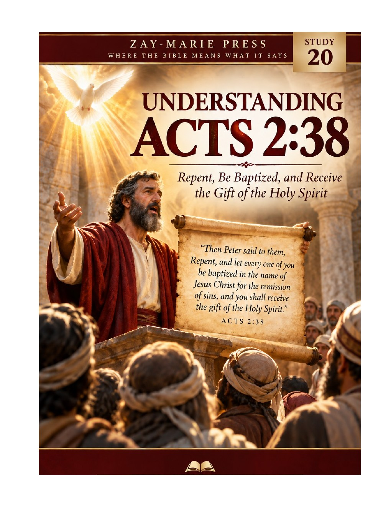
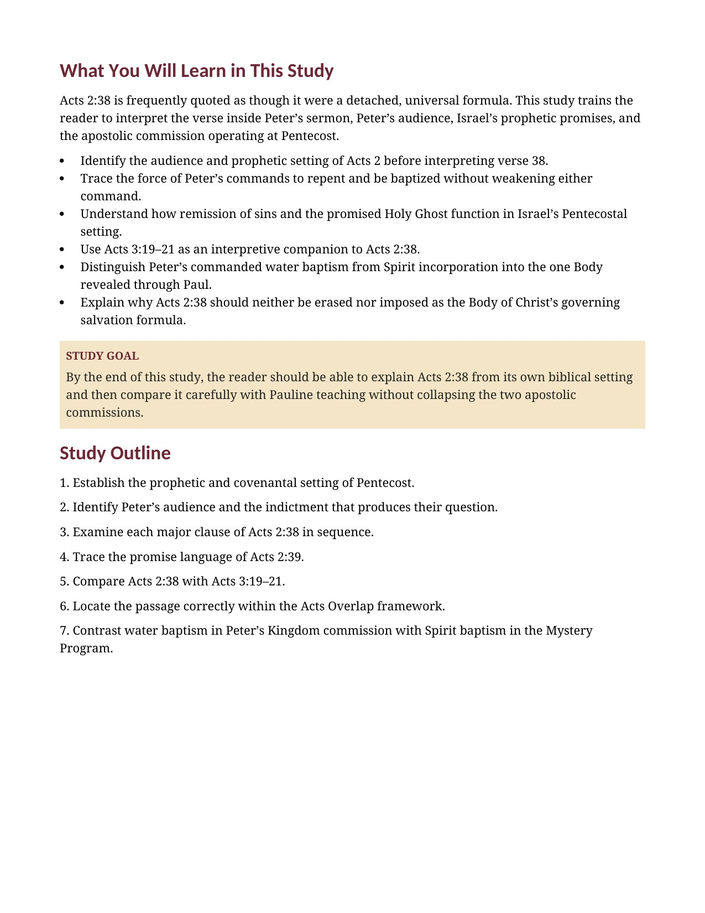
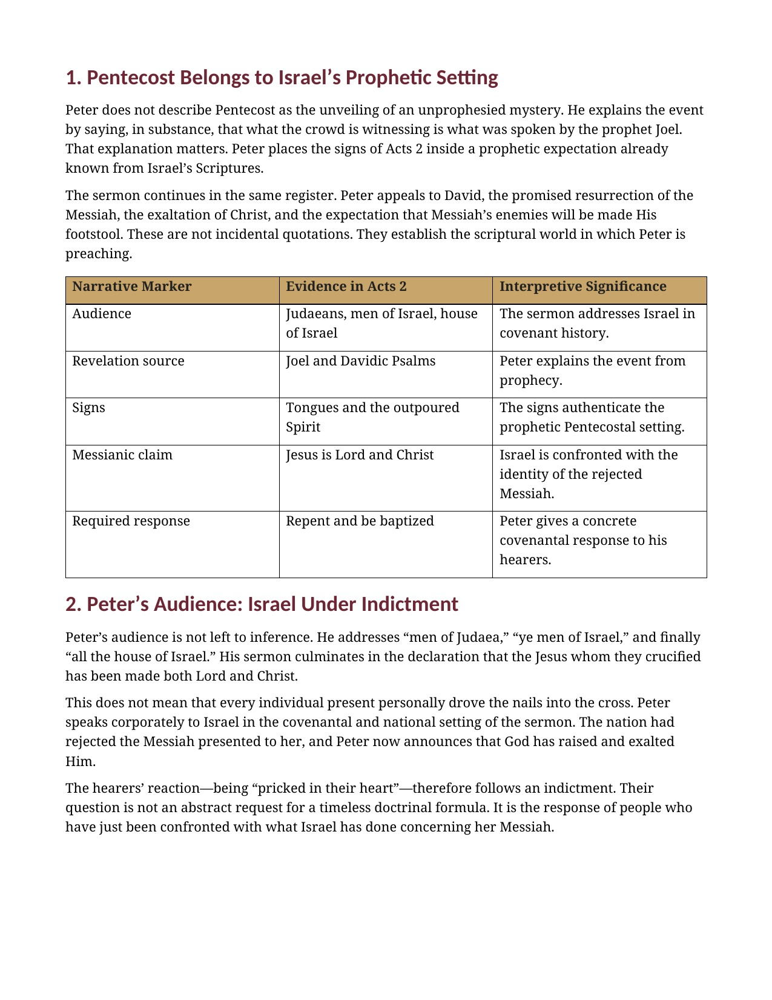
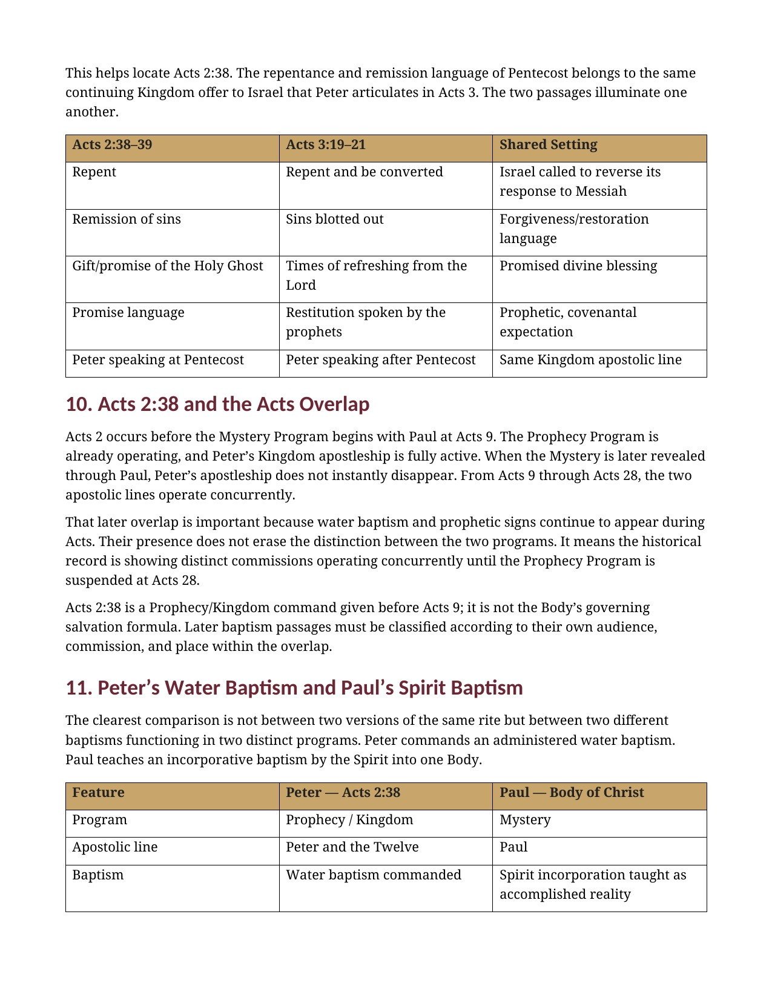
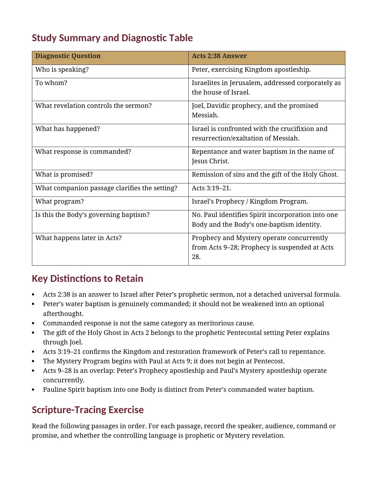

Understanding Acts 2:38
Peter’s Pentecostal Call to Israel in Its Prophetic Setting
A Biblical Study of Peter’s Commands, Pentecost, and the Acts Overlap
Acts 2:38 must be read inside Peter’s Pentecostal sermon to Israel. Peter speaks from Joel, David, Israel’s Messiah, and the nation’s responsibility for rejecting Him before he gives his command to repent and be baptized.
This study follows Peter’s words in their own setting, then compares his commanded water baptism with the Body’s Spirit incorporation revealed through Paul—without weakening Peter’s message or collapsing distinct apostolic commissions.
What Did Peter Mean at Pentecost?
Acts 2:38 is not a detached salvation formula but Peter’s direct answer to Israelites who have just heard his prophetic explanation of Pentecost, his announcement of the risen Messiah, and his indictment of Israel’s rejection of Him.
This study preserves the force of Peter’s commands while identifying their audience, their prophetic source, their promised outcome, and the apostolic authority behind them. Acts 3:19–21 confirms that Peter’s call to repentance remains within Israel’s ongoing prophetic and Kingdom setting.
How These Studies Relate
Study 20 interprets Peter’s commands and the promised Spirit in Acts 2:38 within his Pentecost appeal to Israel.
Study 34 — Filled Again distinguishes the later renewed filling in Acts 4 from initial Spirit reception and other Spirit-related events. Study 38 — Why Acts Is Not a Universal Experience Manual gives the broader test for drawing present obligations from narrated events.
Read Peter’s Answer in Its Own Setting
Pentecost and Prophecy
See how Joel, David, the outpoured Spirit, and Israel’s Messiah establish the prophetic setting of Acts 2.
Peter’s Audience
Trace Peter’s direct address to Israel and the indictment that gives rise to the question in Acts 2:37.
Repent and Be Baptized
Examine Peter’s explicit commands without reducing water baptism to an optional afterthought.
Remission and the Spirit
Follow the remission and Holy Ghost language within the Pentecostal promise Peter has just explained.
Acts 3 as a Companion
Use Peter’s later call to repentance, restoration, and the prophets to clarify the setting of Acts 2:38.
Water and Spirit Baptism
Distinguish Peter’s commanded water baptism from Spirit incorporation into the one Body revealed through Paul.
Trace the Pentecostal Texts for Yourself
Joel 2:28–32
Joel speaks of the Spirit’s outpouring in Israel’s prophetic hope. Peter cites this passage to explain Pentecost.
Acts 2:14–39
Peter addresses Israel from Israel’s Scriptures and answers the hearers’ question with repentance and water baptism. The sermon supplies the context for verse 38.
Acts 3:19–21
Peter again calls Israel to repent and connects the response with refreshing and restoration spoken by the prophets. It clarifies the prophetic horizon of Acts 2.
Acts 10:44–48
Peter’s ministry still includes water baptism during the Acts Overlap. The passage belongs to his continuing Kingdom apostleship.
Acts 19:1–7
Water and Spirit episodes in Acts must be read within their own audiences and historical settings. They do not erase the distinction already established in Acts 2.
Matthew 3:1–12
John’s baptism and the promised Spirit provide background for the Kingdom setting of Peter’s message. The passage prepares the reader to distinguish physical and Spirit baptism.
1 Corinthians 12:12–13
Paul identifies Spirit incorporation into one Body as an accomplished reality. This is the Body’s corporate baptismal identity.
Ephesians 4:4–6
Paul describes the Body’s one-baptism identity within its Mystery revelation. It must not be made identical with Peter’s Pentecostal command.
Context Before Formula
“Acts 2:38 is an apostolic answer to a specific audience after a specific prophetic sermon.”
Peter’s words retain their force when they are read within the audience, promise, commission, and prophetic setting that Acts itself supplies. Comparison with Pauline teaching comes after that interpretation.
Preview the Study Before You Purchase
Click any page to enlarge it for reading.
{kind=link}

What You Will Learn in This Study
Begin with the governing context, controls, and distinctions that guide the study of Acts 2:38.
{kind=link}

Pentecost and Peter’s Audience
Trace the prophetic setting, Israelite audience, and concrete response Peter commands.
{kind=link}

Acts 2:38 and the Acts Overlap
Locate Peter’s Pentecostal command before Acts 9 and distinguish the later concurrent ministries.
{kind=link}

Study Summary and Diagnostic Table
Review the audience, revelation source, response, promise, and programmatic setting of Acts 2:38.
A Focused Study Built for
Understanding and Teaching
13-Page Biblical Study
A focused study of Peter’s Pentecostal answer and its prophetic setting.
Eleven Teaching Sections
Follow Acts 2:38 from Pentecost through Peter’s commands and Pauline comparison.
Acts 3 Comparison
Read Peter’s companion call to repentance, refreshing, and prophetic restoration.
Water and Spirit Table
Compare Peter’s administered water baptism with Spirit incorporation into one Body.
Study Summary
Review the central answers concerning audience, promise, response, and apostleship.
Key Distinctions
Retain the difference between commanded response and meritorious cause.
Scripture-Tracing Exercise
Classify passages by speaker, audience, command or promise, and programmatic marker.
Teaching and Discussion Tools
Use the review questions, teaching outline, and guided further study for personal or group use.
Understanding Acts 2:38
13-page digital PDF · For personal use
Want More Than a Focused Study?
Digital Studies examine particular biblical subjects and difficult passages. The 40-lesson Biblical Hermeneutics course teaches a complete, repeatable method for establishing meaning in context, determining proper assignment, and making responsible application.